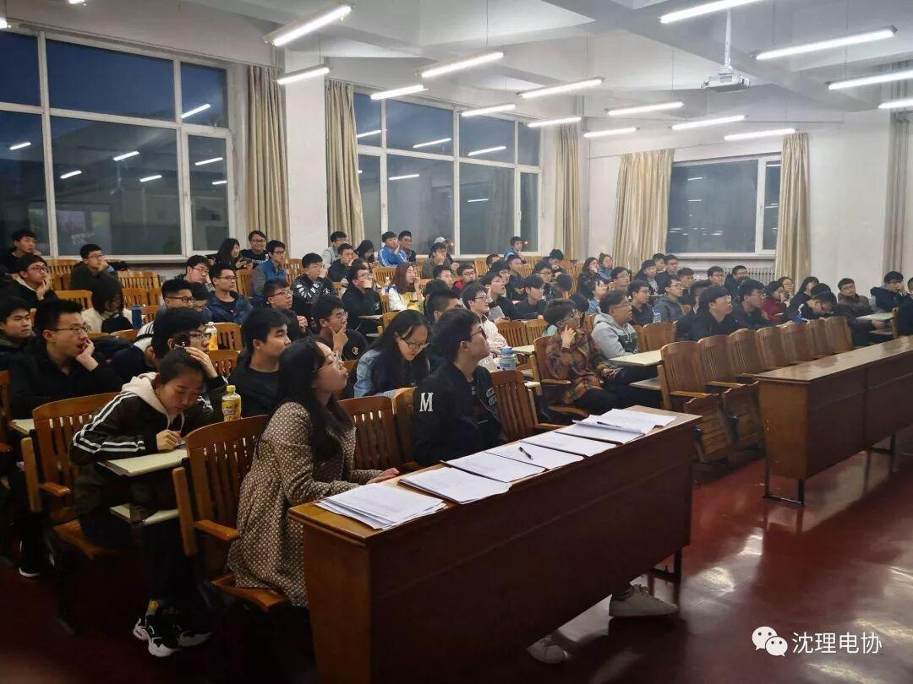
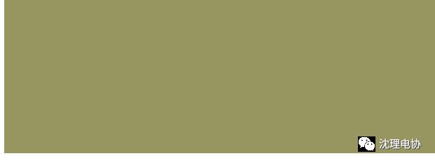
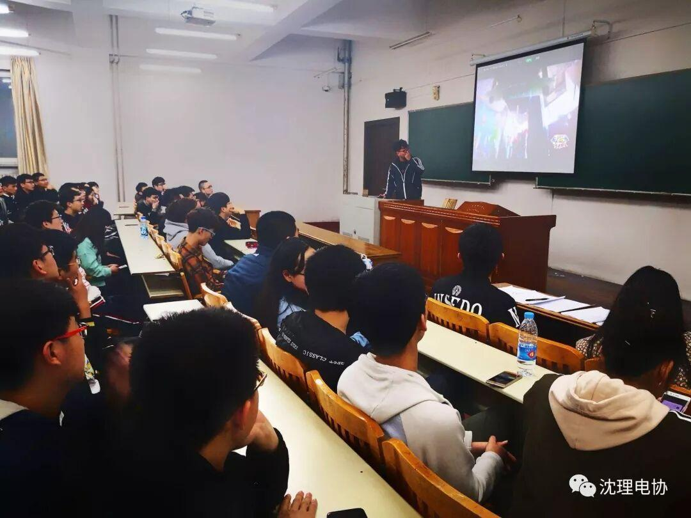
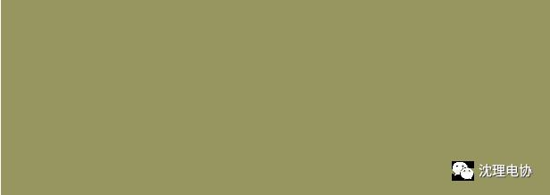
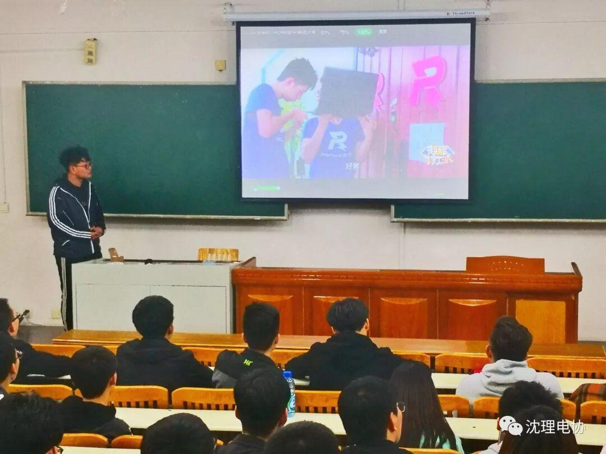
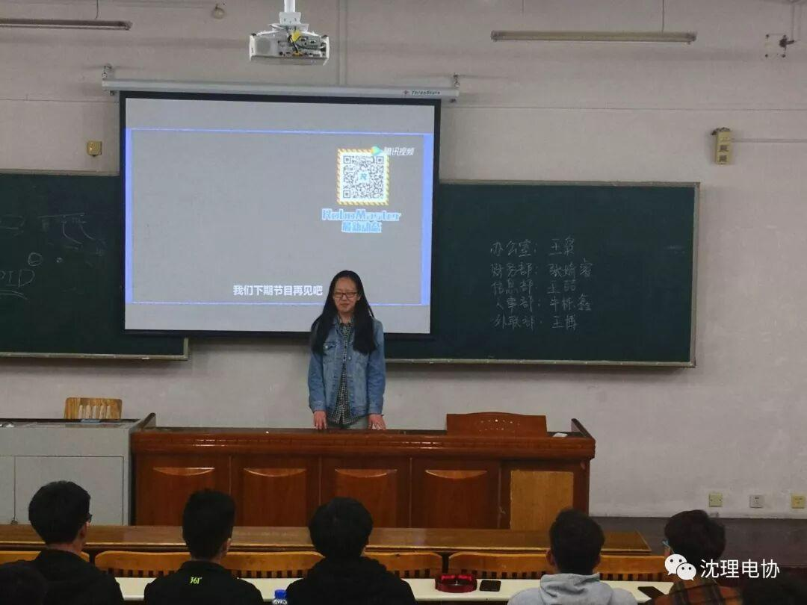
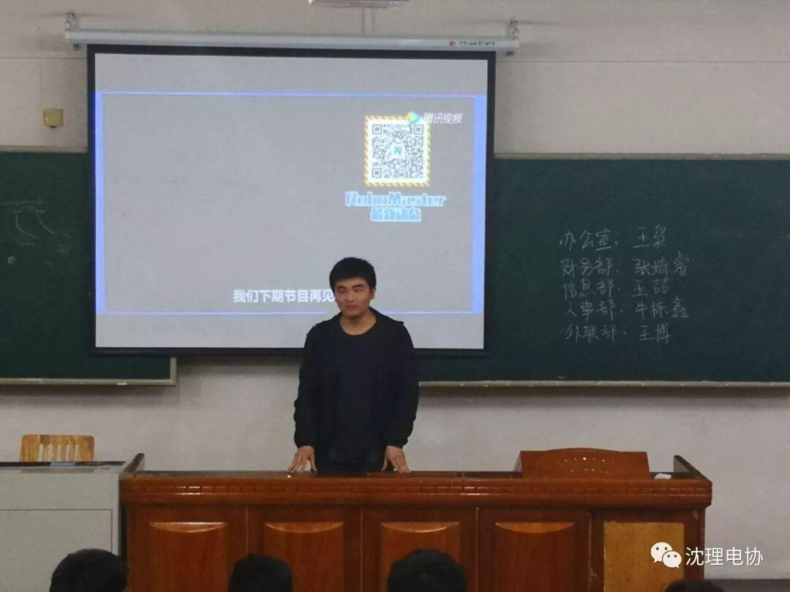
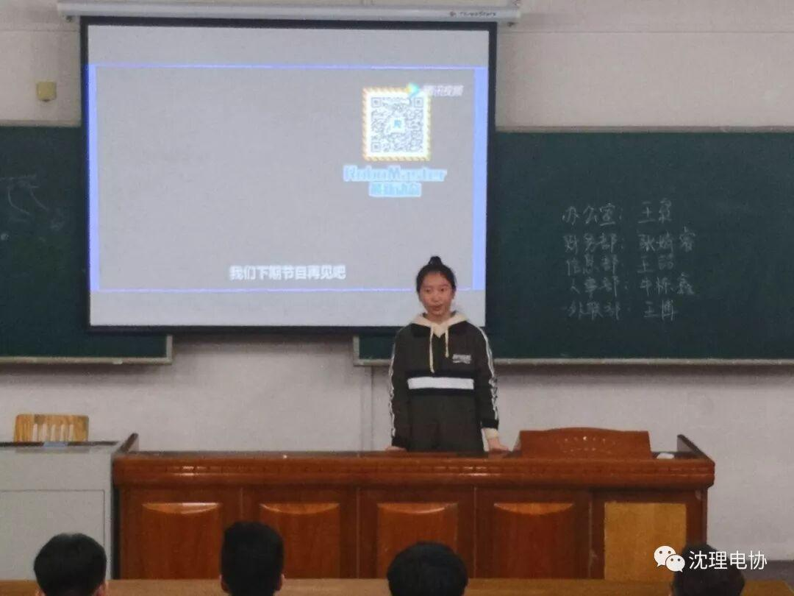
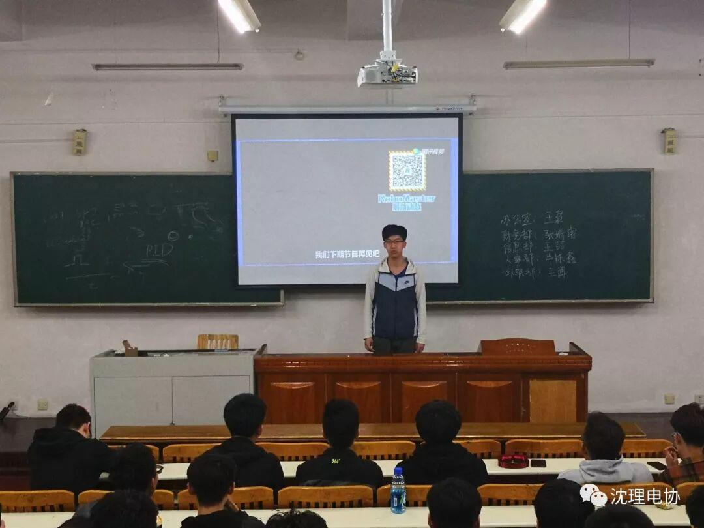

炫酷的事

智能门锁
当当当党，哥几个期待已久的炫酷的事情终于登场，今日我们学的是有关“智能门锁”的内容。快搬个小板凳来坐好~



首先，为了明确我们要做的是哪种锁，我们得先知道日常生活中都有什么样的锁，特点如何，以下是学长提到的几种锁：
普通弹子锁，机械结构，不便于加工，不采用
磁力锁，有电时外力一般拉不开，断电则可直接拉开
推拉式电磁铁，与磁力锁相反，通电为开，断电为锁
其次，为了使开锁更高大上，我们还需知道有哪些开锁的方式，通过什么技术可以实现，以下是学长提到的几种方式：
蓝牙开锁，与上学期的蓝牙小车相似，可以使用手机进行数据的接收和发送
WIFI开锁，利用串口发送AT指令，芯片会根据指令执行相应动作，如透传成功，则可以像蓝牙一样
指纹开锁，串口通信技术，利用库文件中指定的操作方式完成开锁
人脸识别开锁，有兴趣有能力的童鞋可以踹一踹，opencv或第三方API如Face++旷视
矩阵键盘，可操作性最高，最便宜
都拿小本本记好了吗？



最后，小编认为，这一切的一切还是需要建立在有一定知识储备的基础之上，希望广大电协爱好者抓紧时间充实自己！

部长换届
一件大事，电协各部门部长，换届！经过一连串激烈的角逐与演说，不，该说是，长时间来各部门候选人踏实认真地工作，终于，得到承认！
猜个小谜吧：办公室部长由渊博多识的某学长担任，财务部部长由温柔细致的某学姐担任，人事部部长由严谨沉稳的某学长担任，外联部部长由漂亮健谈的某学姐担任，信息部部长咳咳咳啃。好了，猜吧，是不是太明显了？答案见下行。
办公室：王枭


财务部：张婧睿


人事部：牛栋鑫


外联部：王博

信息部：当然是我们可爱又能干的王喆学长啦

编辑：罗杰
图片：白皓天

▲及我们战队微博
▼扫码关注我们